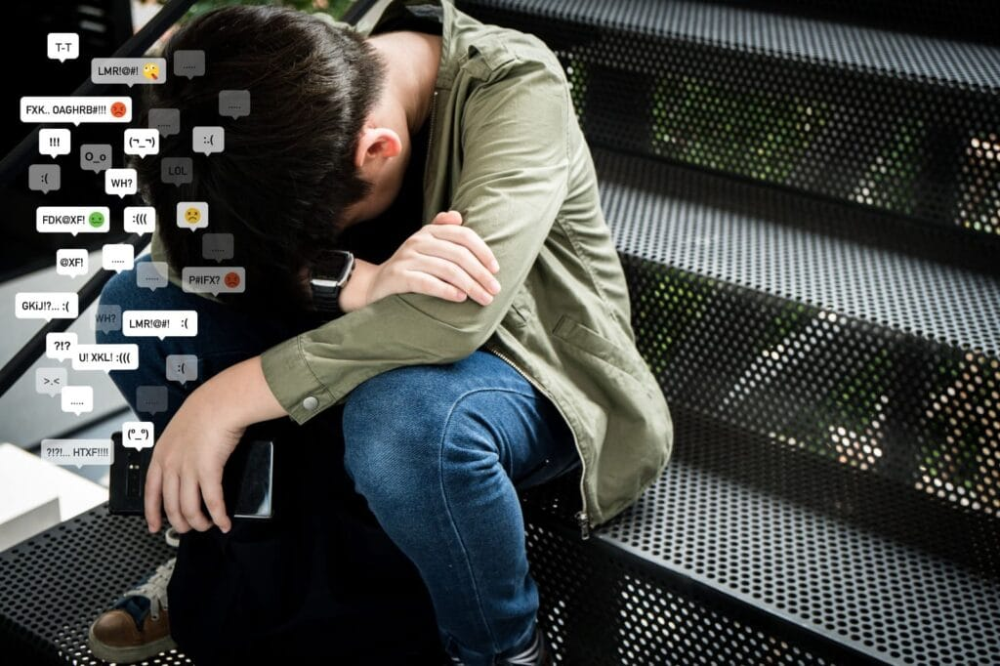

Kajian ilmiah ringan mengenai pentingnya menjaga akhlak, moral serta sikap bijaksana dalam menghadapi penyimpangan sosial di era digital.
Manusia merupakan makhluk sosial yang hidup berdampingan dengan berbagai karakter, pandangan, serta perilaku yang berbeda. Dalam kehidupan sehari-hari masih banyak ditemukan tindakan yang bertentangan dengan nilai moral maupun ajaran agama, seperti penyebaran ujaran kebencian, cyberbullying, fitnah, korupsi, hingga perilaku intoleransi. Islam mengajarkan bahwa setiap muslim tidak hanya diwajibkan menjaga dirinya, tetapi juga memiliki tanggung jawab sosial untuk mengajak kepada kebaikan (amar ma'ruf) dan mencegah kemungkaran (nahi munkar) dengan cara yang bijaksana, santun, dan penuh hikmah.
Islam membenci perbuatannya, bukan membenci orangnya. Setiap manusia masih memiliki kesempatan untuk bertaubat.
Nasihat hendaknya diberikan dengan cara yang lembut sebagaimana perintah Allah dalam QS. An-Nahl ayat 125.
Keteladanan merupakan bentuk dakwah yang paling efektif dibandingkan sekadar perkataan.
Tidak mudah menghakimi seseorang tanpa bukti serta tetap menghormati hak sesama manusia.
Pada tahun 2024 Kementerian Komunikasi dan Digital (Komdigi) bersama SAFEnet kembali mencatat tingginya kasus perundungan (cyberbullying) serta penyebaran ujaran kebencian di media sosial Indonesia. Fenomena tersebut menyebabkan gangguan psikologis, permusuhan antar masyarakat, bahkan berujung pada proses hukum. Perilaku tersebut bertentangan dengan ajaran Islam yang melarang ghibah, fitnah, menghina sesama, dan menyebarkan kebencian.

"Menurut saya, masyarakat tidak boleh membalas keburukan dengan keburukan yang sama. Sikap terbaik adalah memberikan contoh perilaku yang baik, mengedukasi dengan santun, serta tetap menghormati martabat setiap manusia. Dengan demikian nilai moral dan agama dapat tetap terjaga tanpa menimbulkan konflik baru."